Caso 023 · Le Corbusier y Pierre Jeanneret · 1931 · vivienda unifamiliar
Un muro de piedra recoge lo que sirve y sostiene un solo plano blanco que vuela hacia el valle sobre la casa de quien vive; la casa crece alargando el muro y el plano.
La idea resume el lugar (una meseta casi plana con el valle del Sena al oeste y la entrada por el este), el programa (una familia de tres, tres personas de servicio y un jardinero fijos, coches y hasta doce personas con invitados), la composición (una banda pesada al este y una ligera al oeste, bajo una losa) y la construcción (piedra local que acumula calor, hormigón blanco, acero y vidrio). La casa mide 16,5 × 36 m con una crujía de 6 m en el sentido norte-sur; la ampliación consiste en añadir una crujía más al norte, alargando muro y plano.
Estereotómico: la banda de piedra al este (x de 10,2 a 16,2 m), de 6 m de fondo, con muros portantes de 0,60 m (este) y 0,40 m (oeste) sobre zapata corrida en T invertida. Aloja la cocina, los dormitorios de servicio, el garaje, las instalaciones, el chófer y el paso de entrada. Los tabiques interiores son de bloque enlucido de 0,15 m. Tectónico: el cerramiento de acero y vidrio en x = 3,0 (oeste) y en el testero sur, con siete pilares tubulares de acero de 0,20 m de diámetro y 10 mm de espesor, de 3,6 m de altura (esbeltez de 51), sobre zapatas de 1,8 × 1,8 m con dado. Plano: una losa de hormigón blanco de 0,40 m de canto, con su cara superior a +4,00, de 16,5 × 36 m. Se apoya en la piedra en toda su longitud, vuela 3,0 m al oeste sobre los pilares y no tiene nada por encima. Retícula: módulo de 6,0 m en y (pilares en y = 0,3, 6, 12, 18, 24, 30 y 35,7) y ejes en x = 3,0 / 10,2 / 16,2. No hay núcleos verticales: es una sola planta.
Alturas solares al mediodía: 17,6° el 21 de diciembre, 41,1° en el equinoccio y 64,6° el 21 de junio.
Medidas clave: 3,60 m de altura libre, 2,60 m de ancho del paso, 0,40 m de canto, 3,0 m de vuelo y 6,0 m de módulo. Sistema proporcional: el módulo de 6,0 m en y y la mitad (3,0 m) en x; el vuelo es medio módulo.
Piedra local en los muros (acumula calor en invierno y da inercia a los dormitorios de servicio y al garaje), hormigón blanco en la losa y en la solera, acero y vidrio en el cerramiento oeste y sur, bloque enlucido en los tabiques. La terraza es un pavimento exterior bajo el plano; el patio de llegada, de grava compactada con borde marcado.
La llegada es por el este: la calzada de entrada de 4,5 m lleva al patio de llegada de 525 m², con una calzada de un solo sentido (carril de 2,25 m, giro de radio 5 m, antihoraria): entra por el carril norte, sube por el este, da la vuelta al norte, baja frente a las tres puertas dobles de 2,70 m del garaje y sale por el carril sur, sin cruces de trayectorias. La puerta principal de 1,80 m está en el centro del muro este y da al pasillo de entrada, que desemboca en la recepción. A un lado, el servicio entra por la cocina (puerta en el muro este, y y = 1,5); al otro, el garaje se comunica con el pasillo familiar. El jardinero tiene su pabellón aparte, a unos 25 m de la calle, unido por un camino de 4 m.
| Exigido | Propuesto | Cumple |
|---|---|---|
| Plantas, secciones, alzados, situación, espacios exteriores | P01, P02, S01, S02 (cortes B-B' por la casa y C-C' por la banda de piedra), S03 (este y oeste), S04 (norte y sur), U01, V01-V05, L01 | Sí |
| Detalles constructivos | No se producen en la línea B (decisión del autor); encuentros en S01 y S02 con sus capas | Desviación declarada |
| Sección fugada, perspectiva a mano, ambientación | V04, V03, V05 | Sí, esquemáticas |
| Estancias de la familia (3 dormitorios con vestidor y baño) | 3 de 22 m² con vestidor (6-7 m²) y baño (5-6 m²) | Sí |
| Dormitorio de invitados | 1 de 22 m² | Sí |
| Recepción de visitas | Recepción de 43 m², guardarropa de 10 m² y aseo de visitas de 5 m² | Sí |
| Garaje | 3 plazas, 72 m², puertas dobles de 2,70 m | Sí |
| Servicio (2 dormitorios y chófer) | 2 dormitorios de servicio de 12 m², baño del servicio de 9 m², chófer con dormitorio de 12 m² y baño de 8 m² | Sí |
| Jardinero | Pabellón de 7 × 7 m con estar y cocina de 25 m², dormitorio de 15 m² y baño de 8 m² | Sí |
| Instalaciones | Local de instalaciones de 14 m² en el muro este | Sí |
| Superficie 330-550 m² | 467 m² útiles (casa 248, piedra 170, jardinero 49) | Sí |
| Ampliable | Una crujía de 6 m al norte (y de 36 a 42) alargando muro y plano | Sí |
| Seguridad contra incendios, vivienda de 1.ª familia | Una planta, salida directa al exterior desde cada pieza de la casa | Sí |
| Accesibilidad (referencia): circulación 0,90 m, puerta de entrada 0,90 m | Pasillo familiar de 1,17 m libres; puerta principal de 1,80 m | Sí |
| Itinerario exterior (referencia): ancho 1,20 m | Camino al jardinero de 4 m; patio sin escalones | Sí |
| Parcela y urbanística | Solar rural libre, sin retranqueos | Sí |
| RE2020 | Compacidad, inercia de la piedra, vuelo de 3,0 m contra el sol alto; no se calcula el Bbio | Desviación: no se calcula |
| Ocupación en láminas | S02 queda al 52 % en A2 (dos secciones de un edificio de 36 m de largo y 4 m de alto; a 1:100, la misma escala que S01) | AVISO justificado |
Sistema: una losa de hormigón postesado de 0,40 m apoyada en el muro de piedra (luz de 6,0 m desde el muro oeste de la piedra al muro este) y sobre siete pilares de acero (vano de 7,2 m entre los pilares y la piedra, vuelo de 3,0 m). Canto de 0,40 m = vuelo / 7,5 = vano / 18. Cada pilar de acero de 0,20 m de diámetro y 10 mm carga unos 750 kN mayorados frente a unos 2.200 kN de capacidad. Ningún punto del plano queda a más de 6 m de un apoyo. Cimentación: zapatas de pilar de 1,8 × 1,8 m con dado de 0,6 m; zapatas corridas en T invertida bajo los muros (1,2 m de base bajo el de 0,40 m y 1,6 m bajo el de 0,60 m), con la base a 1,10 m bajo el suelo, por debajo de la helada (0,80 m); una zapata corrida de borde de 1,2 m de ancho bajo el canto oeste de la losa de suelo de la terraza. Juntas: el plano se hormigona en una pieza hasta la crujía de ampliación, donde se prevé una junta de dilatación.
| Elemento | Material | Acabado |
|---|---|---|
| Muros este y oeste de la banda, paso y pabellón | piedra | piedra local |
| Tabiques interiores | bloque | enlucido |
| Cerramiento oeste y sur de la casa | metal | acero y vidrio |
| Losa de suelo y plano | hormigón | hormigón blanco |
| Pavimento de baños, cocina, aseo, trastero y guardarropa | baldosa | baldosa |
| Pavimento de dormitorios y vestidores | tarima | tarima |
| Pavimento de la sala, el comedor, el garaje y el pasillo de entrada | losa | hormigón pulido |
| Terraza, patio y camino | exterior | grava compactada |
Agua fría y caliente, gas, electricidad y calefacción central salen del local de instalaciones de 14 m², con depósito, caldera y cuadro rotulados en planta y un conducto de humos que sube por la esquina noroeste del local hasta 0,70 m sobre el plano, en el extremo norte del muro este, junto al servicio y al chófer. El plano de hormigón no lleva nada por encima: las tuberías de desagüe de la cubierta bajan embebidas en el muro de piedra desde los tres desagües dibujados en P02, y las demás conducciones corren por la banda de piedra.
Clima oceánico templado (Cfb). En invierno, el testero sur de cristal capta el sol bajo y la piedra lo acumula; en verano, el vuelo de 3,0 m sombrea el cristal oeste hasta 1,9 m de altura con el sol de 31,8°, y la ventilación cruzada entre la fachada oeste y la sur atempera el sol tardío. La banda de piedra al norte y al este protege del viento del suroeste la zona de coches.
Una sola planta, sin escalones entre el patio, la puerta principal y la sala. La puerta principal mide 1,80 m; el pasillo familiar, 1,17 m libres. Vivienda individual de 1.ª familia: sin distancias de evacuación; cada pieza de la casa sale al exterior por una puerta-ventana al oeste o por la puerta de entrada, y los dormitorios de servicio y del chófer salen al patio por el muro este.
Lo que comparte la propuesta con la obra original lo impone el encargo: el programa (familia, invitados, servicio, jardinero, coches, instalaciones), el acceso desde el este, las vistas al valle y la posibilidad de ampliar. En lo demás se aparta de ella: no hay un volumen único elevado sobre pilotes, ni rampa, ni ventana corrida, ni solárium; aquí hay una sola planta, un muro de piedra y un plano largo que vuela al valle, y la casa mira al sur y al oeste. La coincidencia con la obra original en el hormigón blanco y los soportes delgados sale de la ligereza del plano, no de su imagen. Frente a las obras de Campo Baeza se aplica su método (masa frente a plano, gravedad, luz calculada), no sus edificios.
El soleamiento calculado y las vistas maqueta 1 y maqueta 2 sustituyen a las maquetas reales al sol. La línea maqueta interior no calcula las manchas de sol dentro: se dibujan en S01. La axonometría de V02 y la de L01 son sombreadas y no a línea, y los detalles constructivos no se producen en la línea B.
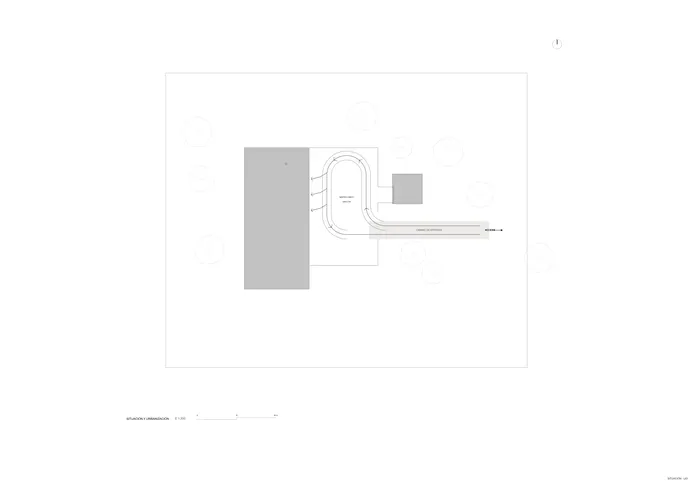
U01 · Situación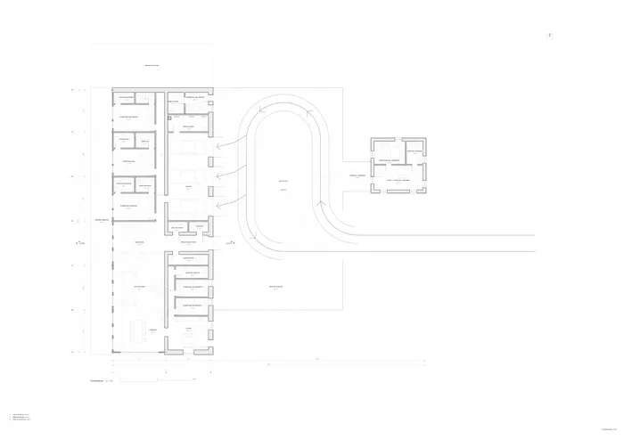
P01 · Planta baja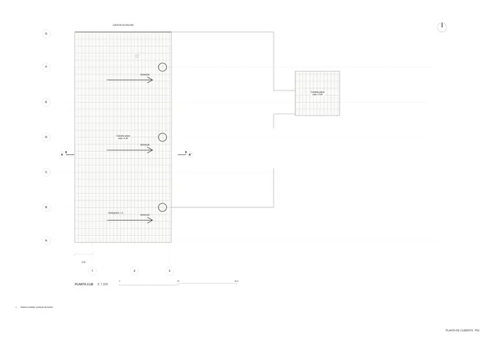
P02 · Planta de cubierta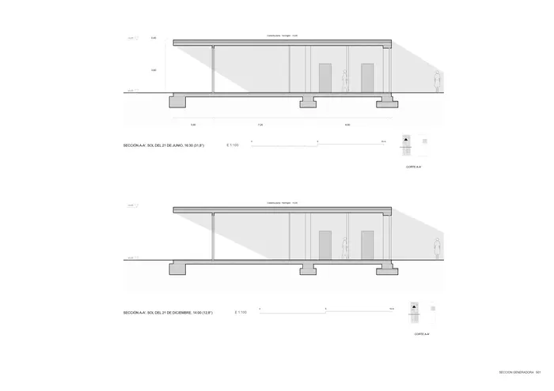
S01 · Sección generadora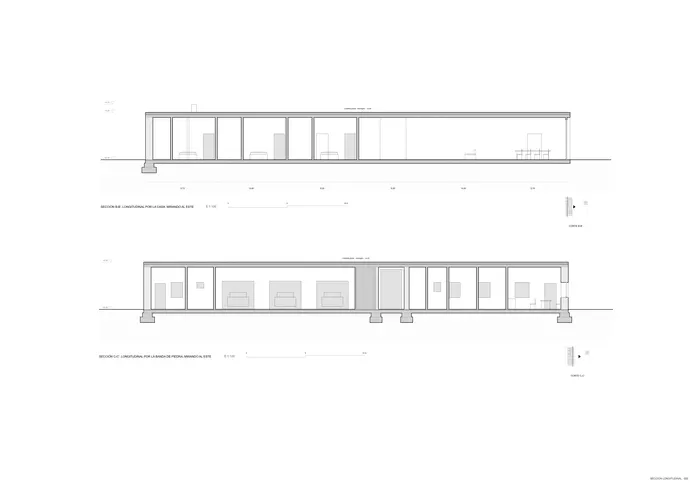
S02 · Sección longitudinal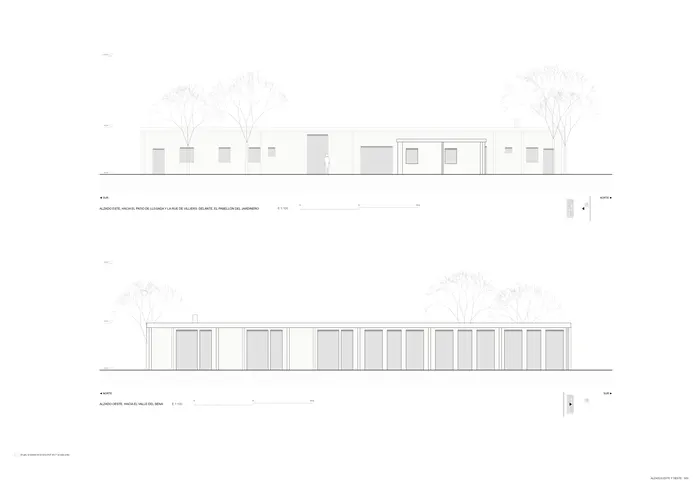
S03 · Alzados este y oeste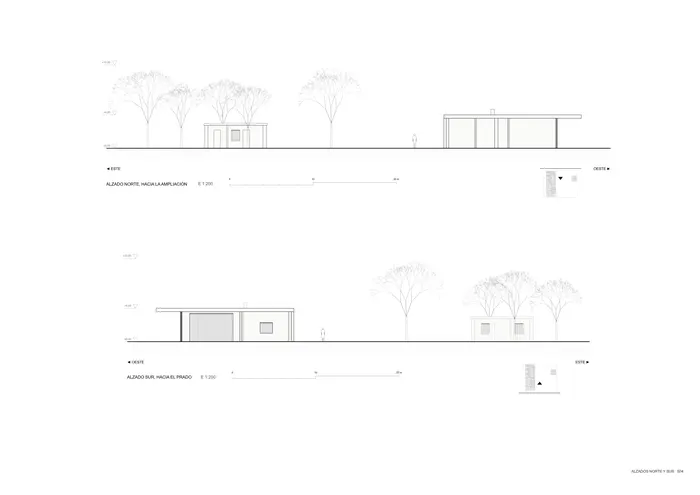
S04 · Alzados norte y sur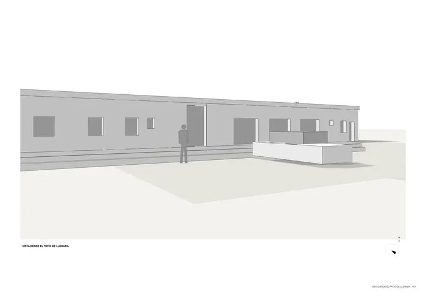
V01 · Vista desde el patio de llegada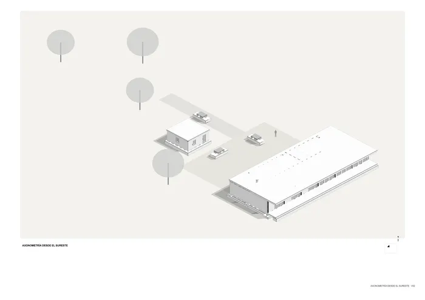
V02 · Axonometría desde el sureste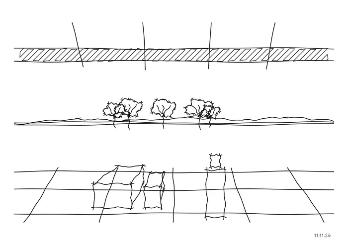
V03 · Perspectiva desde la terraza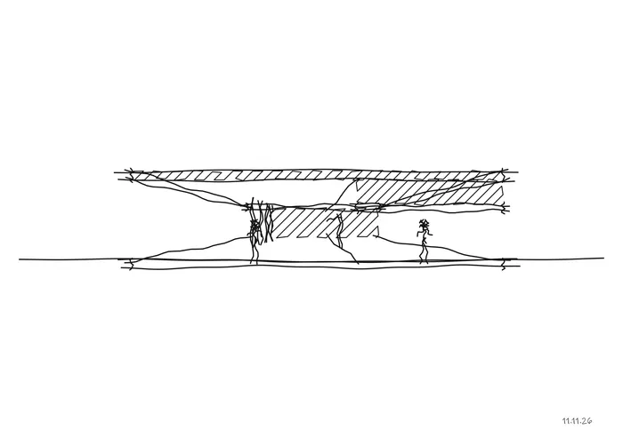
V04 · Sección fugada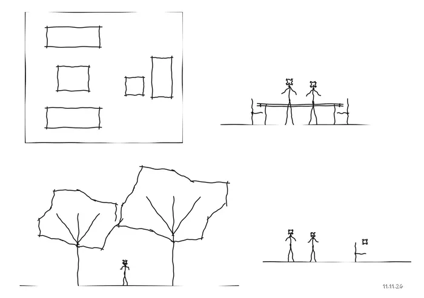
V05 · Ambientación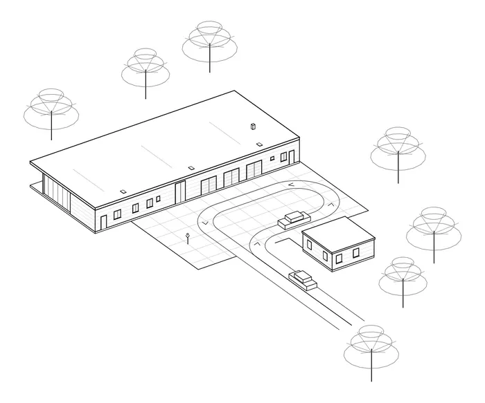
V06 · Axonometría a linea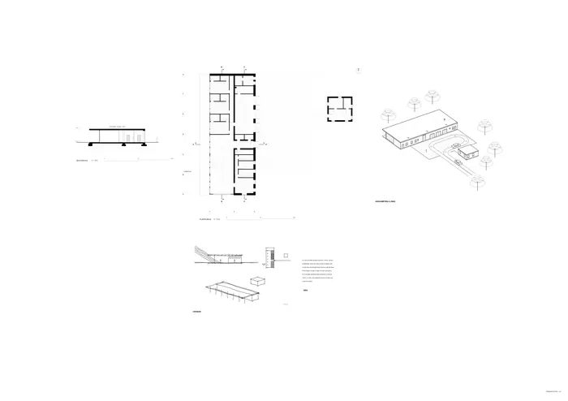
L01 presentaciónMemoria de la propuesta tal como la entregó el sistema. Se han omitido las notas internas del proceso (revisiones, control de reconocimiento y referencias a archivos de trabajo).